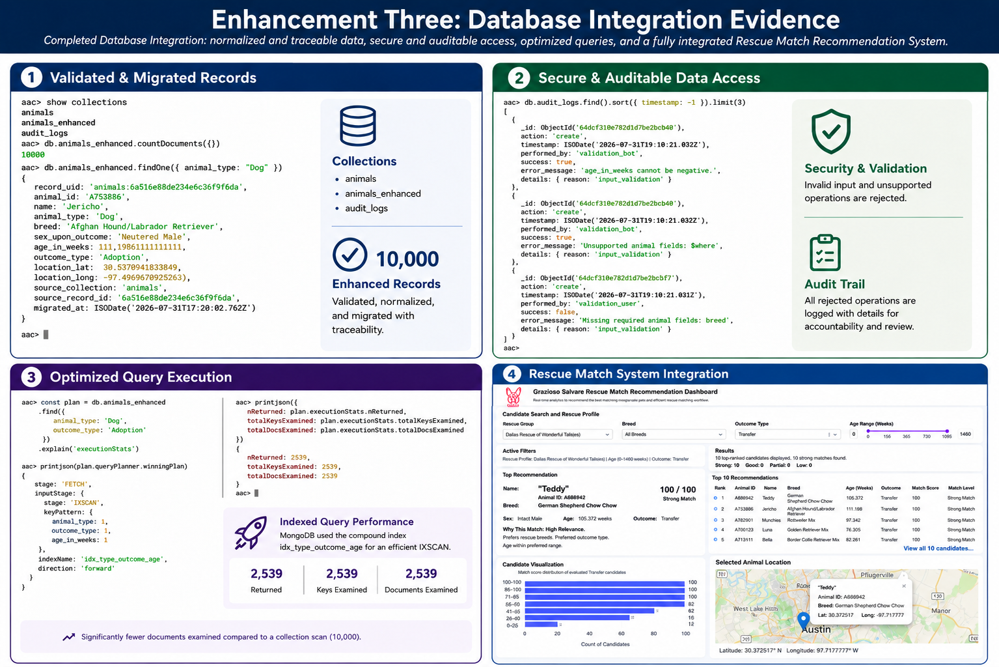

Original Collection
animals was preserved as the original
CS 340 data source.
CS 499 Enhancement Three
A database-engineering enhancement of the Grazioso Salvare Rescue Match Recommendation System focused on validation, security, query efficiency, indexing, controlled data access, and maintainability.
The artifact selected for the database category is the Grazioso Salvare Rescue Match Recommendation System, originally developed from my CS 340: Client/Server Development project.
The original application used Python, Dash, Pandas,
MongoDB, and a custom AnimalShelter class to
retrieve animal shelter records and support interactive
rescue filters, a table, visualization, and map.
Although the original project demonstrated a functional
client/server database connection, the database
implementation primarily relied on the original
animals collection and general query
dictionaries. It did not include a formally validated
application schema, controlled migration, database-side
pagination, aggregation pipelines, audit logging,
optimized compound indexes, or a complete secure
record-specific CRUD interface.
animals was preserved as the original
CS 340 data source.
animals_enhanced stores normalized
and validated application records.
Data integrity, security, query performance, controlled access, and maintainability.
The database enhancement supports both the modular dashboard and the recommendation engine.
I selected this artifact because it provides a clear before-and-after demonstration of my growth in database design and development. The original dashboard contained a working MongoDB connection, but its database layer was primarily focused on basic storage and retrieval.
Enhancement Three gave me the opportunity to evaluate the database as a complete system rather than only as a data source. I addressed schema design, data migration, query construction, performance, security, auditability, and integration with the software and algorithmic enhancements completed earlier in the capstone.
The database enhancement transformed the original basic MongoDB implementation into a more structured, validated, secure, and maintainable data-access service.
| Area | Original Artifact | Enhancement Three |
|---|---|---|
| Data Structure | Used original imported records without a formal validated application schema. |
Records are migrated into
animals_enhanced with
normalized fields, generated
record_uid values, and
MongoDB schema validation.
|
| Query Design | Accepted general query dictionaries and frequently relied on application-side processing. | Queries are built from approved fields and support database-side filtering, projection, sorting, and pagination. |
| Performance | Did not contain purpose-built indexes or documented execution-plan comparisons. | Uses purposeful single-field, compound, and specialized indexes verified through MongoDB execution-plan testing. |
| CRUD Security | Broad update and delete behavior could affect more records than intended. | Uses record-specific operations, approved field lists, validation, protected collections, and explicit deletion confirmation. |
| Auditability | Did not maintain a database mutation history. |
Successful and rejected mutation attempts
are recorded in
audit_logs.
|
| Configuration | Database connection information was closely tied to application source code. | Centralized configuration and environment variables separate connection settings from primary application logic. |
MongoDB validation rules help ensure that enhanced records contain the expected fields, value types, identifiers, and geographic information before entering the application collection.
Original records are evaluated, normalized, and migrated into a separate enhanced collection without modifying the preserved CS 340 source collection.
Filtering, projection, sorting, pagination, distinct-value retrieval, and aggregation are performed through MongoDB instead of unnecessarily loading the complete dataset into the application.
Indexes were designed around representative dashboard query patterns and evaluated with execution statistics to verify that MongoDB actually selected the intended indexed plans.
Create, update, and delete operations use validation, approved fields, record-specific identifiers, collection protections, and explicit confirmation for destructive actions.
Successful and rejected database mutation attempts are recorded so operations can be traced and reviewed.
The enhanced database design separates the preserved original data from the validated collection used by the application.
The original animals collection is
retained as the preserved CS 340 artifact.
Records are cleaned, normalized, checked, and assigned generated identifiers before migration.
The dashboard and recommendation engine use the
validated animals_enhanced
collection.
Security was a major focus of Enhancement Three. The database layer was redesigned to reduce unnecessary trust in unrestricted queries and destructive operations.
record_uid values.
animals collection is
protected from enhanced mutation operations.
audit_logs.
I did not treat index creation by itself as evidence of improved performance. Representative query patterns were evaluated using MongoDB execution plans before and after optimization.
Representative original queries examined the full 10,000-record collection.
MongoDB selected the intended indexes and examined matching keys and documents rather than scanning the complete collection.
This process demonstrated the importance of designing indexes around actual query behavior and then verifying their use rather than assuming that an index will automatically improve every operation.

Testing covered migration, validation, query behavior, secure CRUD operations, collection safeguards, integration, regression behavior, and live-dashboard functionality.
The completed integrated test suite passed all
84 automated tests. Manual testing also confirmed
that the dashboard connected to
animals_enhanced, loaded database-driven
filter values, displayed records, produced rescue
recommendations, updated the chart and map, and
applied breed, age, outcome, and combined filters
successfully.
Secure CRUD testing also confirmed field validation, original-collection protection, explicit deletion confirmation, audit logging, and cleanup of temporary test records.
Enhancement Three strengthened my understanding of databases as complete systems rather than simply places where applications store records. The original CS 340 artifact successfully connected a Python dashboard to MongoDB, but its database implementation was primarily focused on basic retrieval and CRUD functionality.
One of the most important decisions I made was preserving
the original animals collection and creating
a separate animals_enhanced collection.
This allowed me to maintain the integrity of the original
artifact while developing a validated and normalized data
structure for the enhanced application.
The migration process showed me that database development requires careful attention to existing data quality. Source records had to be evaluated and normalized before they could be moved into a collection with stronger validation requirements. This required balancing ideal schema design with compatibility with real data.
I also developed a stronger understanding of database performance. Adding an index does not automatically mean that a query is optimized. I used representative query patterns and MongoDB execution plans to evaluate whether the database selected the intended indexes and whether unnecessary collection scanning was reduced.
Security was another major area of growth. I restricted query and mutation fields, separated database configuration from primary application logic, protected the original collection, required record-specific identifiers for sensitive operations, required explicit confirmation for deletion, and added audit logging. These changes reinforced the importance of anticipating how database operations could be misused or executed incorrectly.
A challenge during the enhancement was maintaining compatibility with the earlier software-engineering and algorithm enhancements. Changes to the database interface affected the service layer and test doubles. This required me to update supporting components so that filtering, sorting, pagination, distinct-value retrieval, age boundaries, recommendations, and dashboard behavior continued to operate correctly.
Testing reinforced the importance of evaluating both individual database operations and the complete system. The final automated suite passed 84 tests, while manual testing confirmed that the dashboard continued to work with the enhanced collection and recommendation engine.
This enhancement demonstrates my ability to evaluate an existing database implementation and improve its correctness, performance, security, auditability, and maintainability. It also contributes strongly to the course outcome involving a security-focused mindset because the enhanced architecture anticipates unsafe operations and introduces safeguards to protect data and resources.
Overall, Enhancement Three completed the transformation of the original CS 340 dashboard into a cohesive Rescue Match Recommendation System. The final artifact combines modular software architecture, algorithmic recommendation techniques, database engineering, automated testing, documentation, security controls, and user-focused decision support.
The downloadable artifact contains the completed Database enhancement and its integration with the Rescue Match Recommendation System, including application source code, database-development materials, tests, configuration examples, and supporting documentation.
Sensitive credentials, local environment files, cache files, and temporary development materials are excluded from the published package.